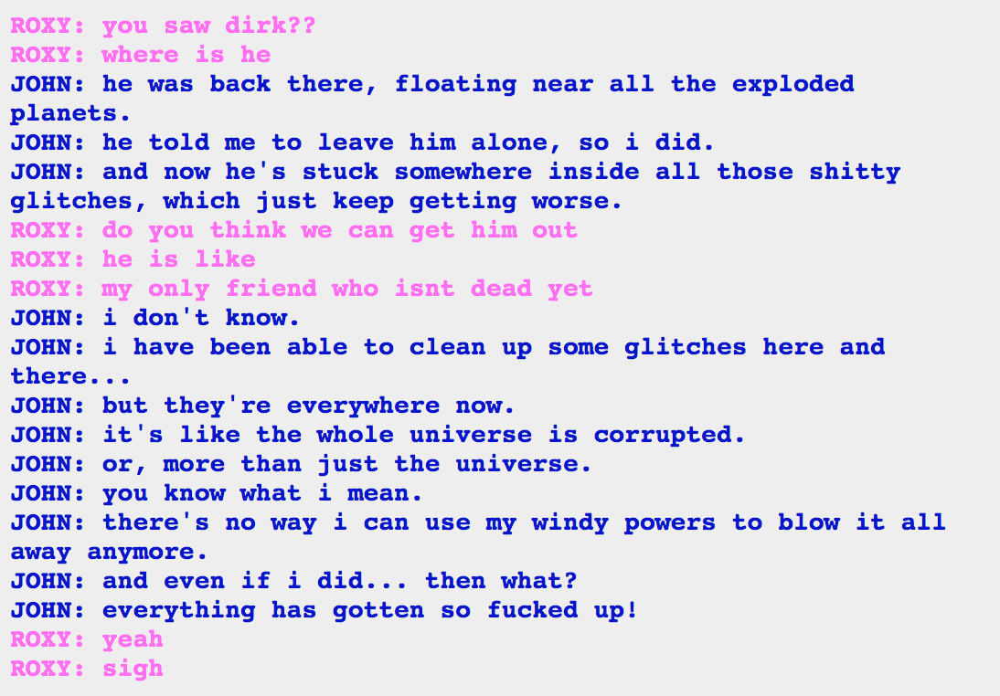

Huh, now I’m wondering if the retcon fixing things will have anything to do with the special stardust getting shoved into the cartridge. I mean, all of the
That would erase a lot, but retcons from other points would still need to deal with the glitching. Which is apparently only going to get worse.